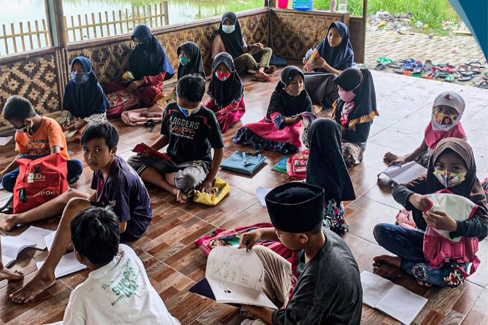
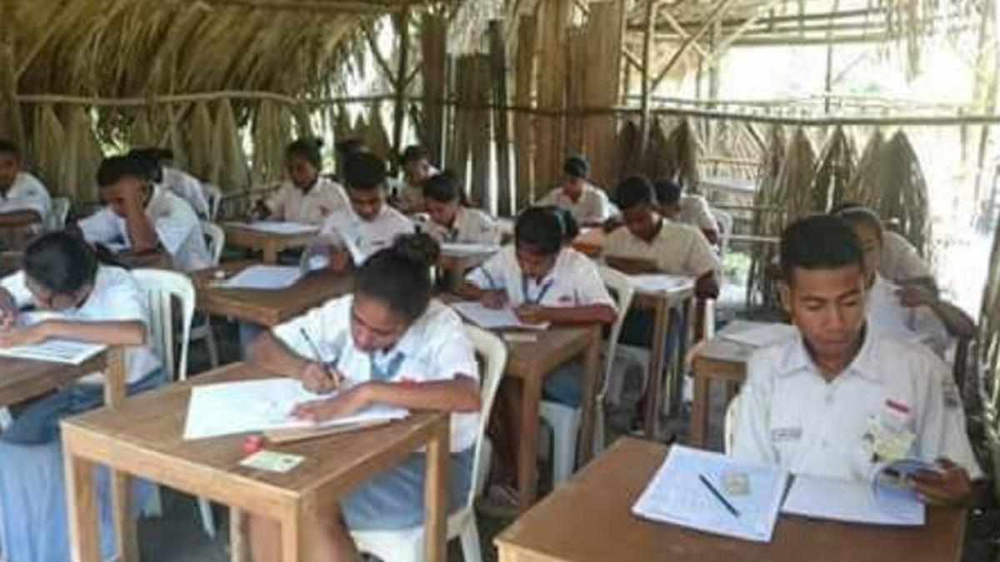
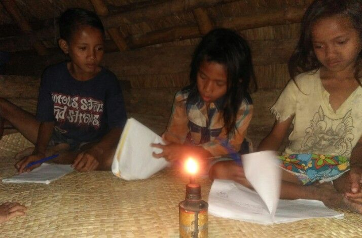
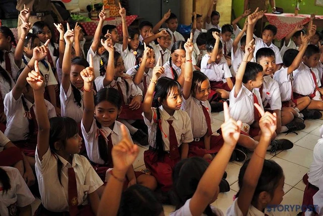
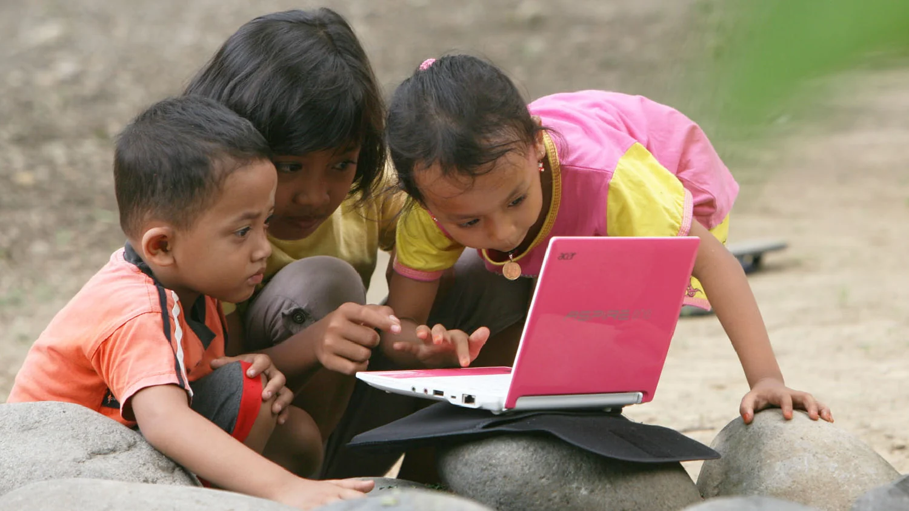
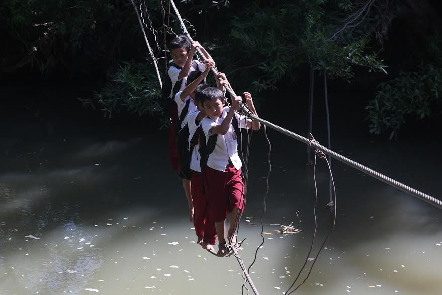
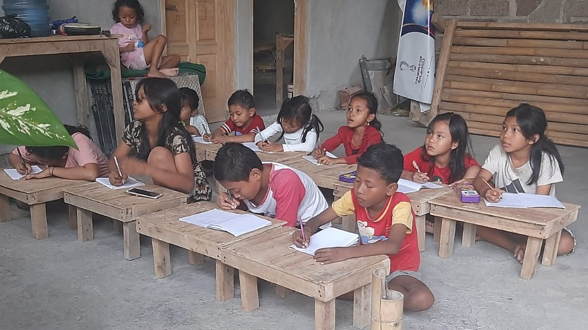

Permasalahan Disekitarku
Permasalahan yang ditemukan di sekitar saya adalah masih adanya kesenjangan dalam memperoleh pendidikan yang layak dan berkualitas. Tidak semua anak memiliki kesempatan yang sama untuk mendapatkan pendidikan, terutama mereka yang berasal dari keluarga dengan keterbatasan ekonomi. Hal ini menyebabkan beberapa anak kesulitan untuk melanjutkan sekolah dan mengembangkan kemampuan mereka. Meskipun pemerintah telah menyediakan program sekolah gratis, fasilitas dan sarana pendidikan di beberapa sekolah masih belum memadai untuk mendukung proses pembelajaran. Permasalahan ini dapat ditemukan di berbagai lingkungan, baik di desa-desa terpencil maupun daerah perkotaan yang masih memiliki keterbatasan akses pendidikan. Salah satu penyebab utamanya adalah kondisi ekonomi keluarga yang tidak mampu membiayai kebutuhan sekolah anak. Selain itu, beberapa orang tua terpaksa meminta anaknya untuk bekerja membantu perekonomian keluarga karena kondisi keuangan maupun kesehatan yang sulit. Kurangnya fasilitas dan layanan pendidikan yang memadai juga menjadi faktor yang memperburuk keadaan. Dampak dari permasalahan ini paling dirasakan oleh anak-anak yang kehilangan kesempatan untuk memperoleh pengetahuan dan mengembangkan kemampuan mereka. Mereka berisiko memiliki tingkat pendidikan yang rendah sehingga kesulitan mendapatkan pekerjaan dan membangun masa depan yang lebih baik. Jika masalah ini terus terjadi, kualitas generasi penerus Indonesia dapat menurun dan kesenjangan sosial semakin meningkat. Padahal, pendidikan merupakan salah satu dasar penting untuk menciptakan masyarakat yang maju dan sejahtera. Permasalahan tersebut berkaitan erat dengan SDGs nomor 4, yaitu Pendidikan Berkualitas (Quality Education). Tujuan ini menekankan pentingnya menyediakan pendidikan yang inklusif, merata, dan berkualitas bagi semua orang tanpa terkecuali. Setiap anak berhak mendapatkan kesempatan belajar yang sama, terlepas dari kondisi ekonomi maupun tempat tinggal mereka. Oleh karena itu, pemerataan akses dan peningkatan kualitas fasilitas pendidikan perlu menjadi perhatian agar seluruh anak Indonesia memiliki kesempatan untuk mengembangkan potensi dan meraih masa depan yang lebih baik.


Kurang Uang = Kurang Pendidikan



Saat ini, masih banyak anak yang belum mendapatkan pendidikan yang layak sehingga mereka tidak memiliki kesempatan belajar yang sama dengan anak-anak lainnya. Permasalahan ini berkaitan dengan kesenjangan ekonomi yang membuat keluarga dengan keterbatasan finansial kesulitan memenuhi kebutuhan pendidikan anak-anak mereka.
Anak-anak dari keluarga kurang mampu menjadi salah satu kelompok yang paling terdampak karena keterbatasan biaya dapat menghambat mereka untuk melanjutkan pendidikan. Selain itu, anak-anak yang tinggal di daerah terpencil juga menghadapi kesulitan karena jarak sekolah yang jauh dan terbatasnya akses transportasi. Kondisi ini membuat kesempatan mereka untuk memperoleh pendidikan tidak sama dengan anak-anak yang tinggal di daerah dengan fasilitas lebih lengkap.


Permasalahan tersebut menunjukkan bahwa kesempatan untuk mendapatkan pendidikan masih belum merata. Perbedaan kondisi ekonomi dan tempat tinggal dapat memengaruhi pengalaman belajar serta kesempatan anak-anak dalam mengembangkan potensi mereka. Hal ini menjadi salah satu tantangan dalam mewujudkan pendidikan yang setara bagi seluruh masyarakat Indonesia.